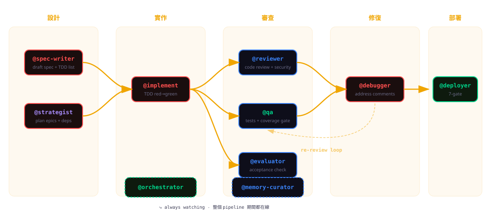
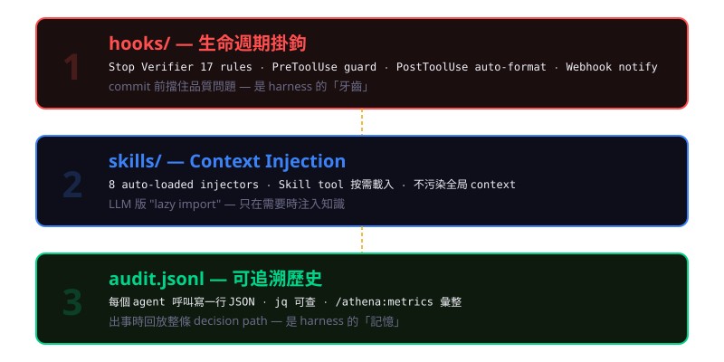

讓 9 個 agent 幫你寫 SaaS
2026 ‧ Mixed-audience talk ‧ ~30 min
esc 縮圖 ‧ s speaker notes ‧ ? 快捷鍵 ‧ r 重播 demo
plan → merge@debugger 自動接手回到 implement
epic-progress.md 的 QA 欄位接到 Stop hook
按 r 重播
@orchestrator 連到 4 cluster ‧ opus = 4 個策略 agent，sonnet = 7 個執行 agent ‧ @designer 是 E163 加入的第 11 個

■ 寫碼 ‧ ■ 審查 ‧ ■ 運維 ‧ 虛線 = always-on agent

/athena 指令空間/athena/ ├── loop ← epic 自動推進 ├── batch ← 並行 wave 執行 ├── cycle ← plan → approve → execute → reflect ├── spec / implement / qa / ship / pr / deploy ├── save / load / plan / learn / promote ├── dba / audit / dashboard / domain ├── metrics ← E146 新增 └── qa-report ← E153 新增
19 個 command，命名紀律乾淨。
/athena:metrics (E146)從 .claude/audit.jsonl 彙整每個 agent 的執行次數、成功率、平均時長、retry 數。
可靠度是可量測的，不是感覺。
@evaluator (E147)獨立驗收 agent — 不寫碼、不審碼，只驗「spec 要求的 acceptance criteria 有沒有達成」。
避免「寫的人也是驗的人」的 conflict of interest。
按 space 暫停 ‧ 按 r 重播
github.com/cloud-f1/ai-coding-template
/athena:load to start
{"ts":"2026-04-11T10:23:14Z","agent":"spec-writer","epic":"E148","event":"start","ctx_tokens":4521}
{"ts":"2026-04-11T10:23:48Z","agent":"spec-writer","epic":"E148","event":"tool_use","tool":"Write"}
{"ts":"2026-04-11T10:24:02Z","agent":"spec-writer","epic":"E148","event":"complete","duration_s":48,"retries":0}
{"ts":"2026-04-11T10:24:15Z","agent":"qa","epic":"E148","event":"start","ctx_tokens":3890}
{"ts":"2026-04-11T10:26:41Z","agent":"qa","epic":"E148","event":"test_run","passed":11,"failed":0,"coverage":0.87}
{"ts":"2026-04-11T10:26:55Z","agent":"qa","epic":"E148","event":"complete","duration_s":160,"retries":0}
每一行是 JSON ‧ jq 可查 ‧ 出事時能完整 reproduce decision path。
scripts/hooks/
├── CLAUDE.md
├── stop-verifier.sh ← 17 rules
├── rules/
│ ├── 01-localstorage-ban.sh
│ ├── 02-fireevent-ban.sh
│ ├── 03-staletime-hardcode.sh
│ ├── 04-msw-location.sh
│ ├── ...
│ └── 17-css-var-drift.sh
├── pretool-guard.sh
├── posttool-format.sh
└── webhook.sh